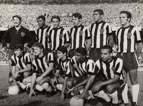

Bem-vindo ao site oficial do MAIOR DE MINAS
Acompanhe as últimas notícias, explore nossa história e visite a loja oficial do Galo!

Acompanhe as últimas notícias, explore nossa história e visite a loja oficial do Galo!
O Clube Atlético Mineiro, carinhosamente conhecido como "Galo", foi fundado no dia 25 de março de 1908 em Belo Horizonte, Minas Gerais. A ideia de criar o time surgiu em uma conversa entre um grupo de jovens estudantes que costumavam se reunir no Parque Municipal para praticar esportes e trocar ideias. Inspirados pelo crescimento do futebol no Brasil, eles decidiram formar um clube dedicado ao esporte que começava a ganhar popularidade no país. O grupo era composto principalmente por jovens da elite da capital mineira, com destaque para os fundadores Antenor Guimarães e Alejandro Martins de Otero, que assumiram a liderança na criação do clube. Inicialmente, a equipe se chamava Athlético Mineiro Football Club, com um uniforme preto e branco, inspirado na elegância dessas cores. A fundação do Atlético Mineiro não foi apenas a criação de um clube de futebol, mas também o início de uma paixão que atravessaria gerações. Desde os primeiros dias, o Galo já carregava em sua essência valores de luta, garra e identificação com a cultura mineira, consolidando-se como um dos times mais queridos e tradicionais do Brasil.
Visite nossa loja oficial e adquira produtos exclusivos do Atlético Mineiro, como camisas, bonés e acessórios!